五股職訓局
機電AI_115-1期（作者：Rido老師）PC-Based 運動控制軸卡與工業 IO 卡整合實戰
大銀微系統 PCI4P 四軸軸卡・研華 PCI-1756 隔離 IO 卡・MCCL 運動函式庫・多軸插補運動
在精密半導體設備、龍門型加工機 (Gantry) 與四軸機械手臂 (X, Y, Z, Θ) 中，傳統 PLC 難以滿足高速脈衝 (2.44 Mpps) 與微秒級多軸軌跡插補的需求。本專題以大銀微系統 (HIWIN MIKROSYSTEM) 四軸運動卡 PCI4P 與 研華 (Advantech) PCI-1756 64通道光隔離數位 IO 卡 為核心，詳細剖析 MCCL (Motion Control Command Library) 運動命令函式庫從硬體初始化、機構參數設定、AB相編碼器回授、原點復歸 (Homing 16種模式)、多軸運動群組建置 (Group)，到直線/圓弧/螺旋軌跡插補、寸動 (Jog) 與背隙補償 (Backlash Compensation) 的完整 C# 實務開發心法！
大銀 PCI4P 四軸運動控制卡
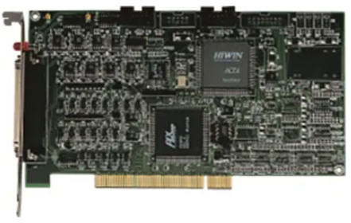
大銀微系統 PCI4P 四軸脈衝型運動控制卡實體圖支援 PCI 匯流排，單卡獨立控制 4 軸伺服/步進馬達，全系統最高可擴充 12 張卡 (72 軸同控)。內建硬體極限保護開關、高速編碼器計數器與驅動器致能迴路。
研華 PCI-1756 64通道 IO 卡
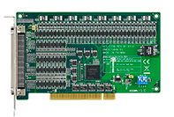
研華 PCI-1756 64-ch Isolated Digital I/O PCI 卡實體圖具備 32 通道隔離輸入 (DI) 與 32 通道隔離輸出 (DO，每通道可承受 200mA 大電流)。支援輸出狀態回讀 (Readback) 與系統熱重置保持狀態，杜絕突波雜訊干擾。
MCCL 運動命令庫架構
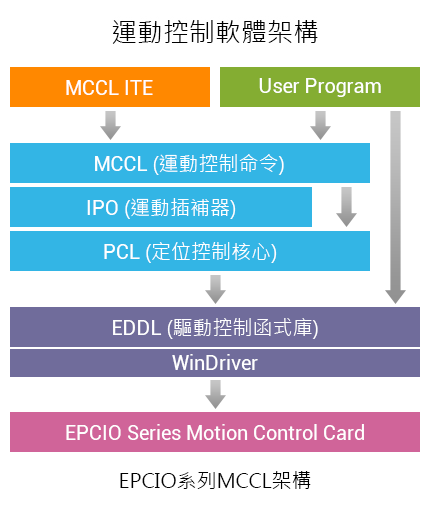
User Program ➔ MCCL ➔ 軸卡驅動程式層次架構提供點對點 (PTP)、連續直線補間、圓弧、圓與螺旋軌跡規劃。內建 S-Curve 與 T-Curve 加減速平滑濾波，支援非同步命令佇列 (Command Queue) 與即時位置回授監控。
大銀四軸龍門手臂機台
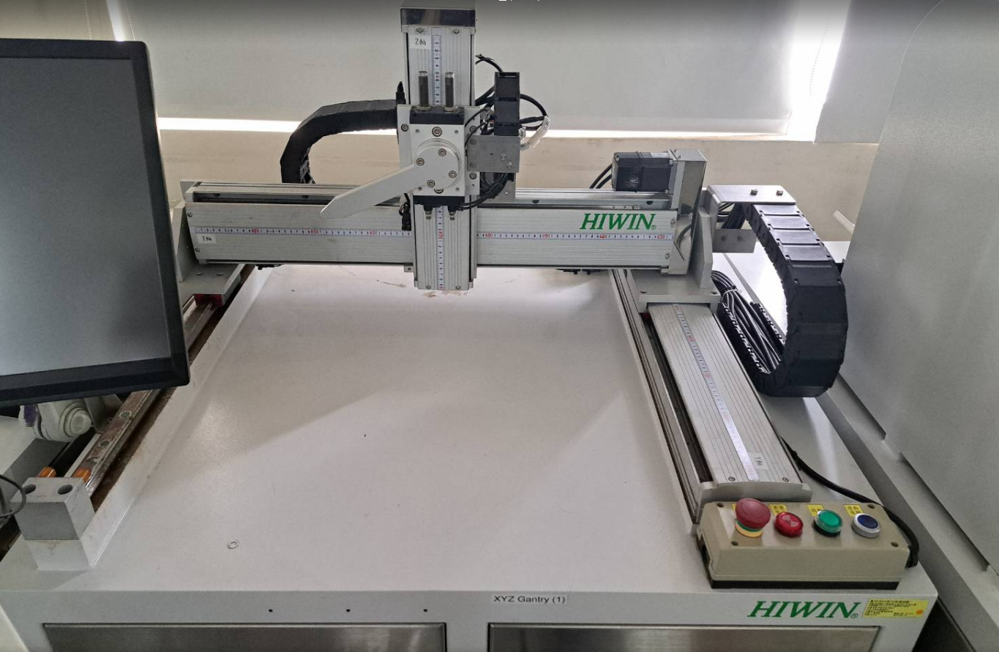
大銀 X-Y-Z-Θ 龍門 (Gantry) 機械手臂實體機台四軸伺服精密傳動，結合滾珠螺桿與線性滑軌，達成高剛性與微米級重複定位精度，廣泛應用於半導體晶圓取放、SMT 表面黏著與點膠作業。
大銀 PCI4P 運動控制卡 vs 研華 PCI-1756 數位 IO 卡 規格解析
| 比較項目 | 大銀微系統 PCI4P 四軸運動卡 | 研華 PCI-1756 隔離數位 IO 卡 |
|---|---|---|
| 核心功能定位 | 高速多軸馬達運動軌跡生成、插補、脈衝發送與編碼器回授 | 周邊氣壓缸電磁閥、光電感測器、安全光柵之隔離數位信號監控 |
| 控制通道數 | 單卡 4 軸獨立控制（全系統最高可串聯 12 張卡達 48 軸~72 軸） | 64 通道隔離數位 IO（32 DI 輸入 / 32 DO 輸出，分組獨立接地） |
| 輸出信號頻率 / 功率 | 最高脈波輸出頻率達 2.44 Mpps (2.44 MHz)，支援 CW/CCW 與 Pulse/Dir | 每通道最大可吸收 200 mA 大電流（High-sink），可直接驅動繼電器 |
| 電氣隔離與安全防護 | 硬體正負極限開關 (OT+ / OT-)、原點開關 (Home)、伺服警報 (ALM) 瞬斷輸入 | 通道間提供高達 2,500 VDC 光隔離保護、70 VDC 過電壓保護、2,000 VDC 靜電防護 |
| 回讀與狀態保持 | 硬體即時回讀 32-bit 編碼器絕對位置計數器 (Encoder Counter) | 具備 Output Status Readback，且系統溫開機 (Hot Reset) 保持輸出狀態不跳脫 |
MCCL (Motion Control Command Library) 啟動運動函式庫 7 大步驟實戰
Step 1：設定機構參數 (Mechanism Parameters) 與脈衝輸出格式
機構方向與速度極限設定馬達旋轉與機械實際移動方向之對應關係，並定義最高安全轉速與每轉脈波數。透過軟體參數調整，工程師無需更改馬達實體配線即可修正方向：
// 宣告機構參數結構體並初始化
SYS_MAC_PARAM stAxisParam = new SYS_MAC_PARAM();
stAxisParam.wPosToEncoderDir = 0; // 方向調整：0=輸出不反向, 1=反向 (免改接線)
stAxisParam.dwRPM = 3000; // 馬達最高轉速限制 (轉/分)
stAxisParam.dwPPR = 10000; // 每轉脈波數 (Pulse Per Revolution)
stAxisParam.dfPitch = 5.0; // 滾珠螺桿導程 (單位: mm/轉)
// 套用至指定 Channel (以 Channel 0 為例)
int nRet = MCCL.MCC_SetMacParam(ref stAxisParam, 0, MCCL.CARDINDEX0);
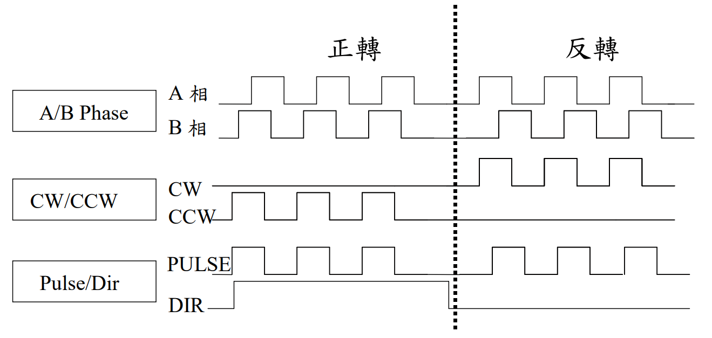
三大脈衝格式：CW/CCW 雙脈衝、Pulse/Dir 脈衝+方向、A/B 相Step 2：設定編碼器參數 (Encoder Configuration) 與硬體極限保護
AB相四倍頻解析配置光學編碼器回授格式。工業標準大多採用 A/B Phase 90° 相位差，透過硬體四倍頻 (4x Multiplier) 計算，可將解析度提升 4 倍；同時軸卡具備硬體正負極限 (OT+ / OT-) 與原點 (Home) 輸入：
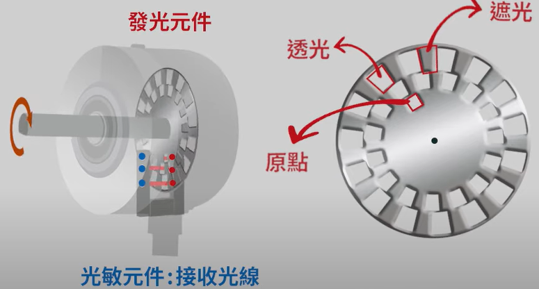
正轉 A 相領先 B 相 90°；反轉 B 相領先 A 相 90° (四倍頻計數)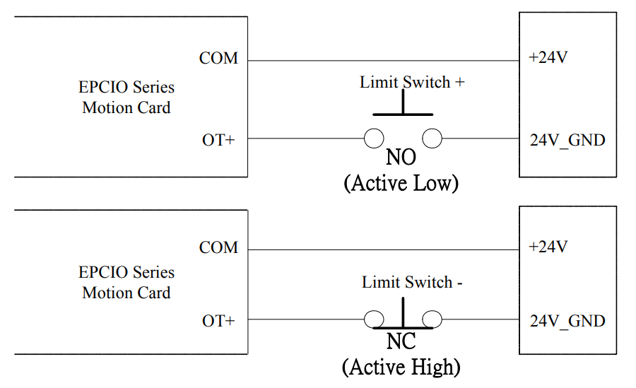
極限開關配線：正極限 (OT+)、負極限 (OT-) 與原點開關 (Home)SYS_ENCODER_CONFIG stENCConfig = new SYS_ENCODER_CONFIG();
stENCConfig.wType = MCCL.ENC_TYPE_AB; // 輸入格式：ENC_TYPE_AB (A/B相), ENC_TYPE_CW, ENC_TYPE_PD
stENCConfig.wAInverse = MCCL.INVERSE_NO; // Phase A 訊號是否反相 (0=不反相, 1=反相)
stENCConfig.wBInverse = MCCL.INVERSE_NO; // Phase B 訊號是否反相
stENCConfig.wCInverse = MCCL.INVERSE_NO; // Phase C (Index/Z相) 訊號是否反相
stENCConfig.wABSwap = MCCL.INVERSE_NO; // Phase A/B 訊號是否交換 (可變更正負計數方向)
stENCConfig.wInputRate = 4; // 編碼器回授倍率：4 代表 4 倍頻 (×4 鑑別微步位移)
// 寫入軸卡暫存器
nRet = MCCL.MCC_SetEncoderConfig(ref stENCConfig, 0, MCCL.CARDINDEX0);
Step 3：設定原點復歸參數 (Home Configuration - 16種模式)
機械與邏輯原點校正
MCCL 提供多達 16 種原點復歸模式。模式 3 (wMode = 3) 廣泛應用於工業台：以高速 dfHighSpeed 尋找原點開關 (Home Sensor)，觸發後減速停止，接著根據 dfOffset 位移至精密的邏輯原點：
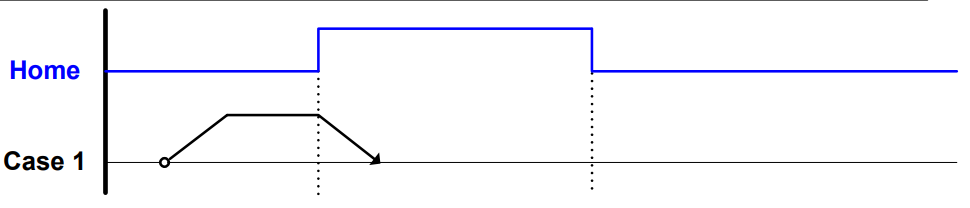
模式 3 原點復歸軌跡：高速移動 ➔ 進入 Home Sensor 減速停止 (停於機械原點) ➔ 根據 dfOffset 移至邏輯原點SYS_HOME_CONFIG stHomeConfig = new SYS_HOME_CONFIG();
stHomeConfig.wMode = 3; // 原點復歸模式 3 (碰 Home Sensor 減速停止並偏移)
stHomeConfig.wDirection = 0; // 起始搜尋方向：0=正方向, 1=負方向
stHomeConfig.wSensorMode = MCCL.SL_NORMAL_OPEN; // 開關配線方式：常開 (Active High) 或 常閉 (Active Low)
stHomeConfig.nIndexCount = 0; // 指定編碼器 Index (Z相) 零位脈波訊號編號
stHomeConfig.dfAccTime = 300; // 加速時間 (ms)
stHomeConfig.dfDecTime = 300; // 減速時間 (ms)
stHomeConfig.dfHighSpeed = 15.0; // 第一階段高速尋找速度 (mm/sec)
stHomeConfig.dfLowSpeed = 2.0; // 第二階段碰觸低速爬行速度 (mm/sec)
stHomeConfig.dfOffset = 5.5; // 機械原點至邏輯原點的補償偏移量 (mm)
// 對每個通道設定專屬的原點補償
nRet = MCCL.MCC_SetHomeConfig(ref stHomeConfig, 0, MCCL.CARDINDEX0);
Step 4：設定運動群組 (Multi-Axis Group Creation)
多軸同動綁定將各自獨立的物理馬達通道 (Channels) 綁定為一個「同動群組 (Group)」。例如大銀機台之 X-Y-Z-Θ 四軸龍門，必須綁入同一個 Group 才能執行直線與圓弧軌跡插補：
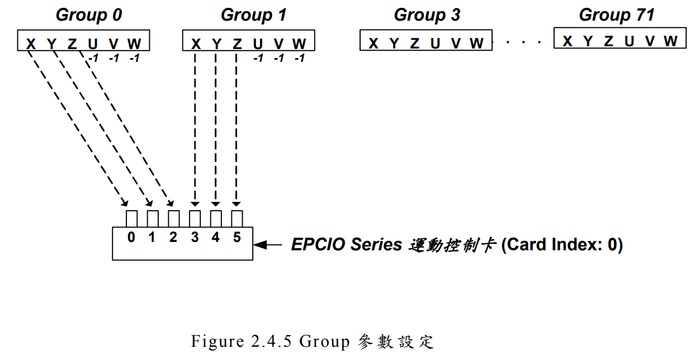
Group 獨立同動系統：內部各軸存在相依空間幾何關係 (如 X-Y-Z Table)// 建立新群組前，務必先關閉系統中所有現存群組
MCCL.MCC_CloseAllGroups();
// 建立群組：指定 X, Y, Z, U, V, W 對應實體 Channel
nRet = MCCL.MCC_CreateGroup(
0, // X 軸 -> Channel 0
1, // Y 軸 -> Channel 1
2, // Z 軸 -> Channel 2
3, // U 軸 (Θ) -> Channel 3
-1, -1, // V, W 軸未使用 (-1)
MCCL.CARDINDEX0, // 軸卡編號 0
MCCL.COMMAND_QUEUE_SIZE// 佇列深度
);
Step 5：設定系統參數與插值時間 (Interpolation Time)
軌跡離散時間調優
初始化系統底層驅動與通訊中斷，並設定核心插值時間 (Interpolation Time)。數值介於 1 ms ~ 50 ms（建議值為 5 ms）。插值時間越短，軌跡越平滑、輪廓誤差越小，但會提高 PC CPU 運算負載：
SYS_CARD_CONFIG stCardConfig = new SYS_CARD_CONFIG();
stCardConfig.wCardAddress = 0x240; // 基礎位址 (PCI 卡自動配置，可保留預設)
stCardConfig.wIRQ_No = 5; // 中斷號 IRQ
stCardConfig.wCardType = (ushort)EPCIO_CARD_TYPE.EPCIO_4_AXIS_PCI_CARD; // 2: 四軸 PCI 運動卡
// 初始化系統：設定 5ms 插補週期，註冊 1 張控制卡
nRet = MCCL.MCC_InitSystem(
5, // 插值時間 Interpolation Time = 5 ms (建議值)
ref stCardConfig, // 軸卡組態結構
1 // 運動控制卡使用張數 = 1
);
Step 6：運動控制設定 (單位、座標系、加減速、P Gain 與即時速度強制)
進給速度與閉迴路增益設定座標系統（公制 mm、絕對座標/增量座標）、進給速度、加減速時間，以及位置閉迴路控制的比例增益 (P Gain)，消除穩態誤差；運行中並可透過 Override Rate (速度強制) 動態依旋鈕微調 0%~200%：
// 1. 工程單位與絕對座標 (G90)
MCCL.MCC_SetUnit(MCCL.UNIT_MM, MCCL.GROUPINDEX0);
MCCL.MCC_SetAbsolute(MCCL.GROUPINDEX0);
// 2. 加減速時間 (毫秒)
MCCL.MCC_SetAccTime(300, MCCL.GROUPINDEX0); // 300 ms 加速
MCCL.MCC_SetDecTime(300, MCCL.GROUPINDEX0); // 300 ms 減速
// 3. 設定穩定運行進給速度 (mm/sec) 與閉迴路比例增益
MCCL.MCC_SetFeedSpeed(30.0, MCCL.GROUPINDEX0);
MCCL.MCC_SetPGain(60, 60, 60, 60, 60, 60, MCCL.CARDINDEX0);
// 4. 動態調速 (例如旋鈕調至 120% 原速)
MCCL.MCC_SetOverrideRate(120, MCCL.GROUPINDEX0);
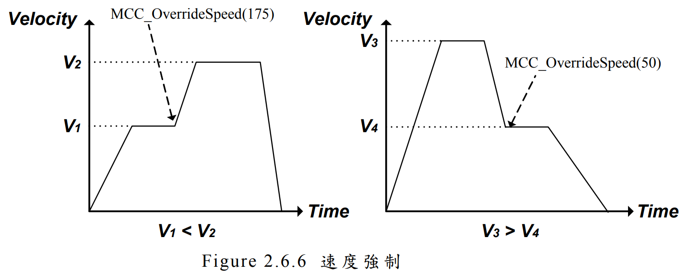
原進給速度 MCC_SetFeedSpeed() vs 速度強制 MCC_SetOverrideRate()Step 7：啟動伺服 (Servo-On)、多軸直線/圓弧插補與命令佇列 (FIFO)
同動插補與吋動通電致能各軸馬達伺服 (Servo-On)，並執行直線補間 (Linear Interpolation)、圓弧/圓/螺旋補間，或透過 CNC 面板吋動定位 (Jog)。所有運動指令均會依序送入非立即執行的非同步佇列 (Command Queue FIFO) 中平滑串接：
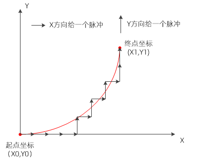
數控插補（Interpolation）：以微小折線段逼近目標空間軌跡曲線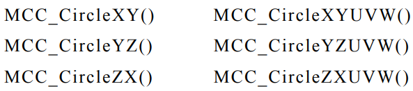
多軸同動高階軌跡：平面圓弧運動、整圓運動與三維螺旋 (Helix) 運動// 1. 開啟伺服馬達激磁 (各 Channel Servo-On)
MCCL.MCC_SetServoOn(0, MCCL.CARDINDEX0); // X 軸
MCCL.MCC_SetServoOn(1, MCCL.CARDINDEX0); // Y 軸
MCCL.MCC_SetServoOn(2, MCCL.CARDINDEX0); // Z 軸
MCCL.MCC_SetServoOn(3, MCCL.CARDINDEX0); // Θ 軸
// 2. 吋動操作：微動脈衝 (JogPulse)、步進吋動 (JogSpace) 與連續吋動 (JogConti)
MCCL.MCC_JogPulse(100, 0, MCCL.GROUPINDEX0); // X軸前進 100 pulses (微調對準)
MCCL.MCC_JogSpace(10.0, 50, 1, MCCL.GROUPINDEX0); // Y軸以 50% 速度前進 10.0 mm
MCCL.MCC_JogConti(1, 20, 2, MCCL.GROUPINDEX0); // Z軸以 20% 速度連續負向吋動 (手動面板操作)
// 3. 四軸多軸直線插補同動 (Linear Interpolation)
// 同時將機台移動至 X=120.0, Y=85.0, Z=-15.0, U=90.0°
MCCL.MCC_Line(120.0, 85.0, -15.0, 90.0, 0, 0, 0, MCCL.GROUPINDEX0);
// 4. 平面圓弧插補 (Arc Interpolation)
// 在 XY 平面內，通過終點與指定圓心座標進行圓弧軌跡運動
MCCL.MCC_ArcTheta(150.0, 85.0, 15.0, MCCL.GROUPINDEX0);
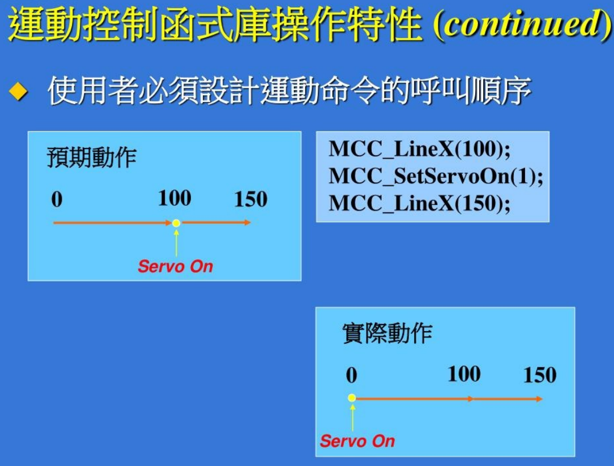
MCCL 命令佇列 (Command Queue FIFO)：Enqueue ➔ 依序 Dequeue 執行，保證軌跡無縫銜接不頓挫運動控制計量心法：解析度、精度、重複性與背隙補償 (Backlash)
解析度、精密度與準確度
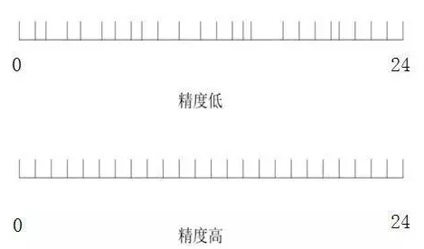
相同解析度・不同精度 靶心圖解：準確 vs 重複性
靶心圖解：準確 vs 重複性
- 解析度 (Resolution)：編碼器能感測到的最小步進位移量（如 17-bit = 131,072 pulses/rev）。
- 精密度 / 準確度 (Accuracy)：目標真值與測量值之間的接近程度。不與雷射干涉儀標準校正，精度就無從談起。
- 可重複性 (Repeatability)：在同一條件下，重複定位於同一點時結果的極端散佈程度。工廠往往更重視重複精度，因為具備可重複性的誤差可以透過軟體補償消除！
齒輪背隙與螺桿間隙補償
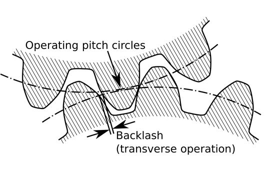
齒背隙 (Backlash)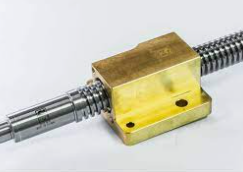
螺桿微小間隙與換向誤差傳動滾珠螺桿或減速機齒輪換向時，因物理齒間隙產生無效行程誤差 (Backlash)。MCCL 支援在換向瞬間由軸卡額外多送出若干補償脈衝：
// 設定各軸換向背隙補償量 (單位: pulse 或 mm)
MCCL.MCC_SetBacklash(
0.012, // X 軸換向補償 0.012 mm
0.015, // Y 軸換向補償 0.015 mm
0.005, // Z 軸換向補償 0.005 mm
0.0, // Θ 軸
MCCL.GROUPINDEX0
);
6σ、Cpk 與 CNC 循圓測試
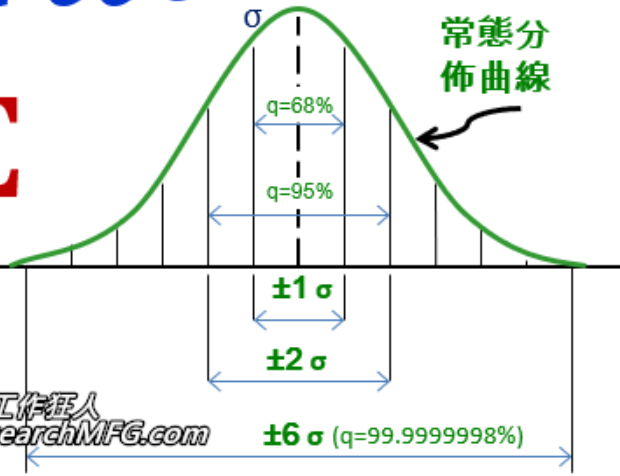
6σ (3.4 PPM 不良率)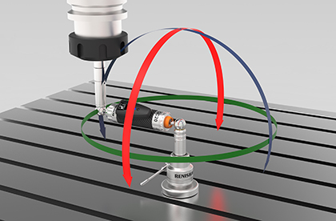
循圓測試 QC20-W 背隙檢驗當機械手臂重複取放數千次工件時，關鍵尺寸分佈必須符合常態分佈：
- 6σ 品質水準：百萬次運作中僅允許 3.4 次不良 (Defects Per Million)。
- Cpk ≥ 1.33：代表機台綜合精度與散布穩定度足以滿足高科技半導體與車用電子生產線！
- CNC 循圓測試：以非切削方式快速檢驗工具機定位效能與動態背隙幾何誤差。
機械空間自由度、六點定位原則 (3-2-1) 與 CNC 面板實務操作
六個自由度 (6 Degrees of Freedom)
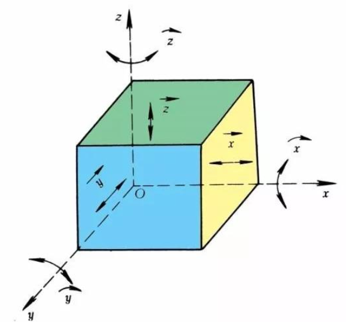
剛體三維空間：3 個平移自由度 (X, Y, Z) + 3 個旋轉自由度 (Roll, Pitch, Yaw)剛體在無約束狀態下擁有 6 個自由度。在 PC-Based 多軸控制系統中，正逆運動學（Kinematics）即是將空間中末端點的 6 DOF 姿態與各軸馬達轉角（Joint Angles）精確轉換的數學基石。
治具六點定位 (3-2-1 原則)
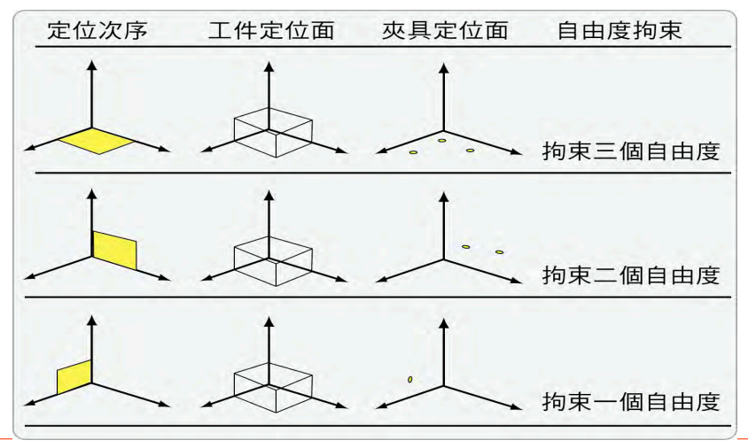
治具拘束順序：3點定基準面 ➔ 2點導引直線 ➔ 1點鎖定終端位置機電丙級與 CNC 加工治具之核心原理！第一基準面以 3 點消除 3 個自由度（Z 平移、繞 X/Y 旋轉）；第二導向面 2 點消除 2 個自由度（Y 平移、繞 Z 旋轉）；第三止動面 1 點鎖定 X 移動，達成完全拘束。
CNC 控制面板與手輪吋動實務
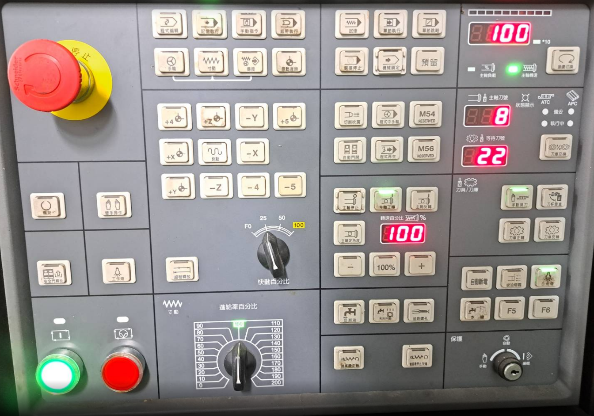
Fanuc / Mitsubishi 工業面板：原點復歸、吋動 (Jog)、主軸正反轉、快速移動
現場操作員常透過實體按鈕與 MPG 手搖輪（Handwheel）調整機台。利用研華 PCI-1756 數位 IO 卡讀取實體按鈕接點，即可在 C# 中呼叫 MCC_JogPulse() 與 MCC_JogConti() 精準對刀！
閉迴路系統深論：半閉迴路 vs 全閉迴路 (光學尺)、虛擬編碼器解析度與絕對型編碼器 (Gray Code)
半閉迴路 vs 全閉迴路 (光學尺直接迴授)
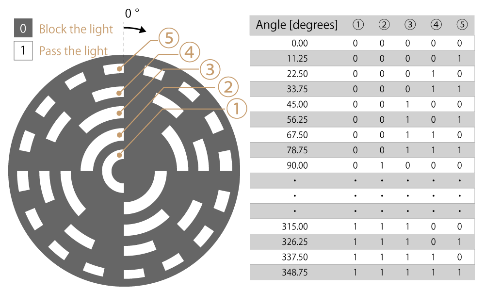
半閉迴路 (馬達尾端編碼器) vs 全閉迴路 (滑台安裝光學尺直接回授)半閉迴路 (Semi-Closed Loop)：回授元件安裝在伺服馬達軸心或尾端。優點是成本低、響應快；缺點是無法感測滾珠螺桿熱膨脹伸長、聯軸器彈性扭轉變形與傳動背隙。
全閉迴路 (Full-Closed Loop)：在工作滑台上直接安裝光學尺 (Linear Scale) 作為直接迴授。光學尺真實反映工作台在空間中的絕對位移，徹底消除機構傳動鏈的一切累積熱變形與機械間隙！
光學尺虛擬編碼器解析度公式
當光學尺規格產生 1 個脈衝當成移動 1 個單位位移量（如 5 μm 或 1 μm）：
軸向編碼器解析度設定值 = 螺桿導程 (Pitch, μm) / 光學尺解析度 (μm) / 4
投影片經典範例計算：
- 滾珠螺桿導程 (Pitch)：
5 mm = 5000 μm - 光學尺解析度 (Scale Resolution)：
1 μm(每 1 μm 產生 1 pulse) - 內部 4 倍頻硬體解碼計算：
5000 μm / 1 μm / 4 = 1250 - 因此在運動軸卡之軸向參數中，編碼器解析度設定值 (Encoder Resolution) 必須精確設為 1250！
若光學尺規格為 5 μm，則設定值為 5000 / 5 / 4 = 250。軸卡依此換算滑台之實際物理位移座標。
增量型 vs 絕對型編碼器 (格雷碼 Gray Code)
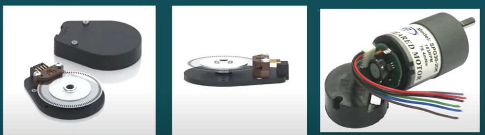
增量型 vs 絕對型光柵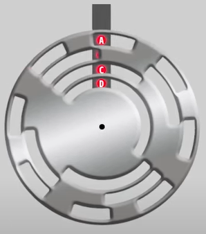
格雷碼多軌同心圓刻度- 增量型 (Incremental)：僅有 A、B 相與零位 Z 相信號。斷電後內部位置數值立即消失，重新送電後必須執行原點復歸 (Homing)，否則控制器不知道機台實際位置。
- 絕對型 (Absolute)：碼盤上刻有由內至外多道同心圓格雷碼 (Gray Code) 軌道。每個角度均有唯一的數位編碼輸出，斷電後位置由內部電池或多圈機械齒輪永久保持！開機立即可開始生產，完全省去 Homing 時間並預防停電復電後的撞機風險。
- 格雷碼優勢：相鄰兩個位置之間僅有 1 個位元發生狀態翻轉，杜絕標準二進碼在多位元同時翻轉時產生的短暫讀取毛邊與誤判！
CNC 刀具補償實務：長度補償 (G43/G44)、半徑補償 (G41/G42) 與刀具磨耗補正
刀具長度補償 (Tool Length Offset - H碼)
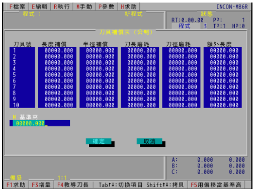
CNC 刀具補償表實體：長度補償、半徑補償、刀長磨耗與刀徑磨耗長度補償定義：刀具長度修正值，即該刀具實體伸出長度與「標準長度基準刀（對刀棒）」之高度比較差值。依長短可為正值或負值。
實際刀長補正值 = 長度補償 + 刀長磨耗
在 G 碼程式中以 G43 H01 Z50.0; 啟動刀長正補正（或 G44 負補正），控制器自動將 Z 軸目標位置疊加 H 碼補正量，G49 為取消長度補償。
刀具半徑補償 (Tool Radius Offset - D碼)
半徑補償定義：銑刀具備實體半徑 $R$，切削時刀具中心路徑必須與工件圖紙輪廓平行偏移一個刀具半徑，否則工件尺寸會被過切！刀徑補償數值只能是正值。
G41：沿刀具前進方向「偏左補償」
G42：沿刀具前進方向「偏右補償」
G40：取消刀具半徑補償
- 在程式中以
D_碼（例如G41 D01 X100.0 Y50.0;）選用補償表中對應的刀徑值。 - 刀具磨耗補正 (Wear Offset)：刀具切削久了刃口鈍化產生磨耗（例如刀長變短 0.03 mm、刀徑磨損 0.015 mm）。操作員毋須重新測量整支刀具，直接在補償表填入磨耗值即可無縫修正工件公差！
五軸同動與 RTCP 刀尖點控制
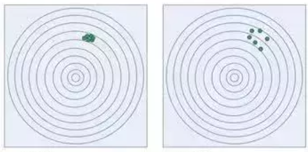
五軸加工中心同動切削渦輪葉片：平滑消除刀痕與接刀公差在五軸加工機或多關節機械手臂中，當擺動旋轉軸 (A/B/C 軸) 傾斜時，刀尖點空間位置會產生劇烈偏移。運動軸卡必須具備 RTCP (Rotation Tool Center Point，刀尖點即時控制) 功能，於插補週期內即時換算刀長向量與旋轉偏置，確保刀尖點恆定貼附工件曲面，消除接刀痕！
高階同動與機構實例：六軸手臂姿態插補、高速口罩機伺服電子凸輪 (E-CAM) 與旋切機構
六軸機械手臂直線補間伴隨姿態控制
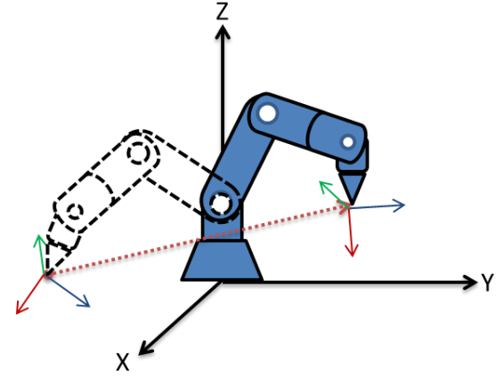
TCP 空間直線位移同動 + 末端法向量歐拉角姿態平滑漸變在雷射焊接、高階噴塗與曲面拋光中，不僅要求工具中心點 (TCP) 沿著三維空間直線移動，工具末端之姿態角度（Roll, Pitch, Yaw 或四元數 Quaternion）也必須以等角速度平滑旋轉過渡。
高階運動庫 (如 NexMotion / MCCL) 於每個插補微小時間段內同時求解逆向運動學方程 (IK)，分配給六個關節伺服馬達，達成姿態無頓挫的空間連續切線平滑。
高速口罩機 (Butterfly Mask Machine) 伺服電子凸輪
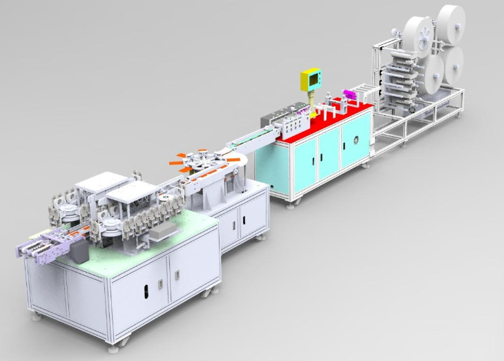
蝴蝶型高速自動口罩機：伺服馬達帶動電子凸輪與滾輪傳動機構投影片實例：Butterfly High Speed Automatic Mask Making Machine 採用伺服馬達 (如 SV-X2MH075A) 作為主驅動源。
- 傳統機台依賴純機械凸輪與連桿，容易磨損且難以調整規格；
- 現代化 PC-Based 機台採用電子凸輪 (Electronic Cam, E-CAM)：上位機預先規劃凸輪曲線，主軸帶動料帶，從軸伺服精確跟隨，實現無紡布送料、鼻樑條切入、超音波封邊與耳帶熔接的毫秒級完全同步！
連續旋切機構 (Rotary Knife) 線速度匹配
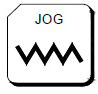
旋切刀滾筒：切入瞬間刀刃線速度必須 100% 匹合輸送帶進料速度包裝機與貼標機常見的旋切機構 (Rotary Knife)。切刀在圓周運動中，當刀刃接觸材料的瞬間（切削區），刀尖的切線線速度 $v_{\text{cutter}}$ 必須與材料前進速度 $v_{\text{material}}$ 嚴格相等！若速度不一致會造成材料撕裂或堆料皺摺；在非切削區則由伺服快速加速或減速等待下一周期，達成不停機連續切斷。
綠色智慧製造：運動控制系統節能減碳 (IEA 規範與馬達效率提升)
IEA 國際能源總署權威數據
根據國際能源總署 (IEA) 調查，全球終端用電有 46% 用於馬達設備！經濟部能源局統計更顯示：工業部門用電佔全台灣用電一半以上，其中馬達用電高達工業用電的 70%！因此工廠落實 ESG 節能減碳，必須從運動控制與伺服馬達驅動效率著手。
伺服回生能量回收 (Regenerative)
多軸機台頻繁進行高速急減速時，馬達反轉產生大量反電動勢 (回生能量)。傳統機台由煞車電阻轉化為廢熱發散；現代綠色架構採用共用直流母線 (Common DC Bus) 或回生轉換器 (Regenerative Unit)，將煞車電能反饋至電網或供相鄰加速軸使用，節電率達 15%~30%！
演算法優化：S-Curve 平滑加減速
梯形加減速 (T-Curve) 在拐點加速度突變，造成衝擊抖動 (Jerk) 與極大的瞬間電流尖峰。MCCL 採用 S-Curve (Jerk-Limited) 七段加減速演算法，有效削平馬達啟動與停機電流尖峰，降低鐵損與銅損溫升，延長機械滾珠螺桿壽命！
運動控制實用互動工具箱：電子齒輪比與脈波頻率即時計算機
伺服馬達電子齒輪比 (Gear Ratio) 計算機
// 電子齒輪比計算結果將即時呈現在此...
脈波頻率 (Hz) 與進給速度 (mm/s) 轉換器
// 脈波頻率評估結果將即時呈現在此...
全閉迴路光學尺虛擬編碼器解析度計算機
// 光學尺虛擬編碼器解析度計算結果將即時呈現在此...